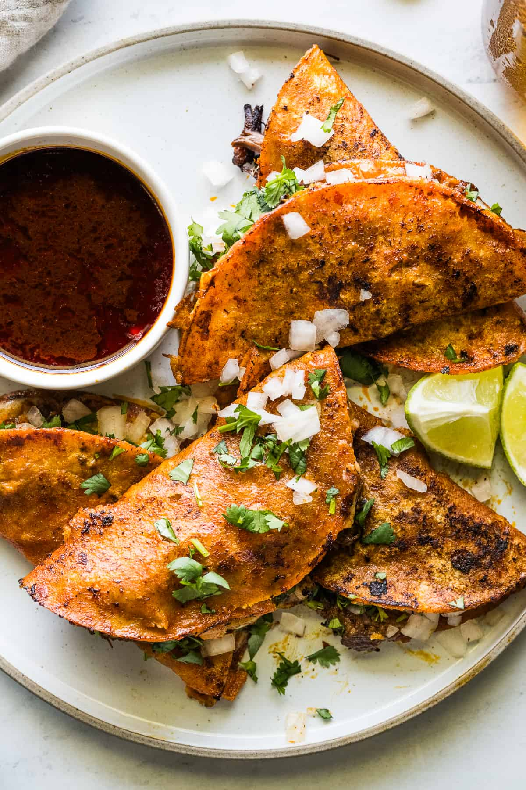

The Starving Artist Cookbook
Birria Tacos
Total time 30 min
Makes 1 dozen
Author Isabel

INGREDIENTS
- Dried chiles: You need guajillo chiles, ancho chiles, and arbol chiles. You can
find them in the international foods aisle of your local grocery store or at all
Hispanic grocery stores. If you can’t find them in your area, buying them online
is always a great option. If you’ve never worked with dried chiles before, I’ve got
your back. Step by step instructions are in the recipe card below. You can also read
this detailed birria post for more.
- Spices and bay leaves: I used a combination of garlic, cumin, ground clove, Mexican oregano,
Mexican cinnamon stick (also called Ceylon cinnamon), black peppercorns, and 3 bay leaves. If
you don’t have Mexican oregano, you can use regular oregano. If you can’t find Mexican cinnamon
sticks (they’re the brittle kind that you can easily break in half), you can use 2 teaspoons
of ground cinnamon.
- Meat: I used a beef chuck roast to make my birria. It’s got a great fat-to-meat ratio and
creates the perfect layer of fat needed to fry the tortillas to make birria tacos. Birria is traditionally made
with goat or lamb meat, but that’s not readily available where I live, so I opted for beef. Other options
also include short ribs, beef shanks, and oxtail for added flavor.
- Corn tortillas: Corn tortillas that you can get just about at any grocery store are perfect! Of course,
you can always make your own homemade corn tortillas if you’re feeling fancy.
- Shredded cheese: Traditional Mexican melting cheeses like Oaxacan (quesillo), Chihuahua, and Asadero are the
best options, but you could also use Monterey Jack or Mozzarella if you can’t find those near you.
- Cilantro, diced white onions, and lime wedges: Must-have toppings that pair perfectly
with the rich and fatty birria!
DIRECTIONS
- Make the birria. Season and sear the meat on both sides. Then soak the chiles, blend
them until smooth, and strain the sauce into a pot with the seared meat. Bring everything
to a boil, then turn the heat to low, cover, and cook for 3-3 ½ hours until the meat
is fall-apart tender. Take the meat out and shred it with two forks.
- Dip both sides of a corn tortilla in the layer of fat that sits on top of the
pot of birria. Try to only dip into this top layer and not further down into the
red broth or consomé.
- Fry the tortilla in a large skillet over medium-high heat. It should begin bubbling
immediately. Top half of the tortilla with a generous amount of shredded cheese and
shredded birria meat.
- Fold the other half of the tortilla over to create a taco, and cook for 1 minute on
each side until the cheese has fully melted and the tortillas have crisped up.